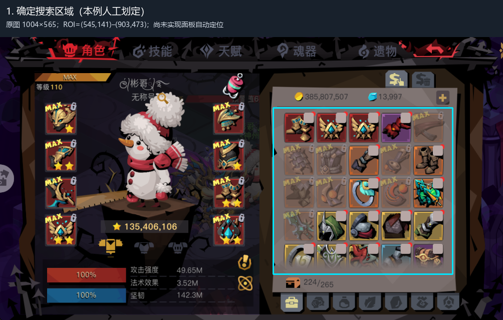
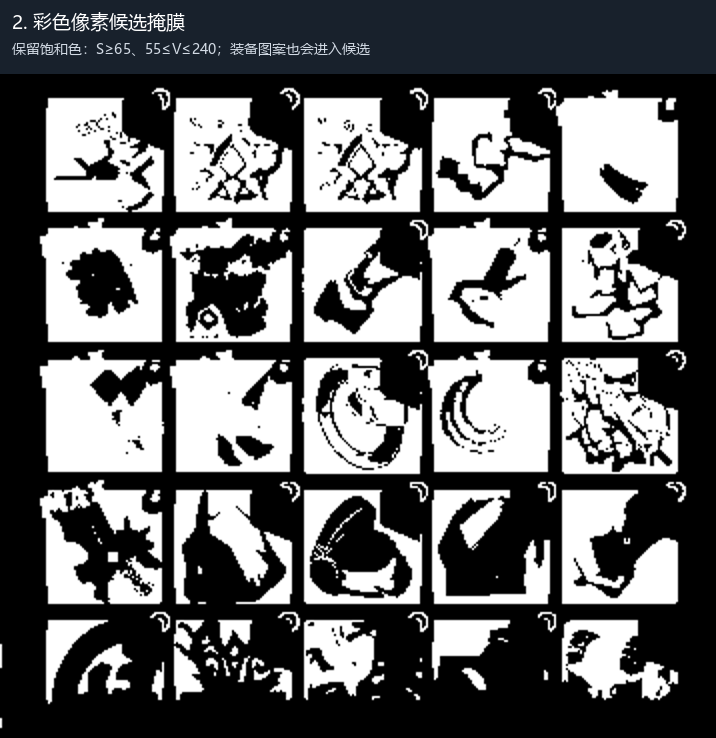
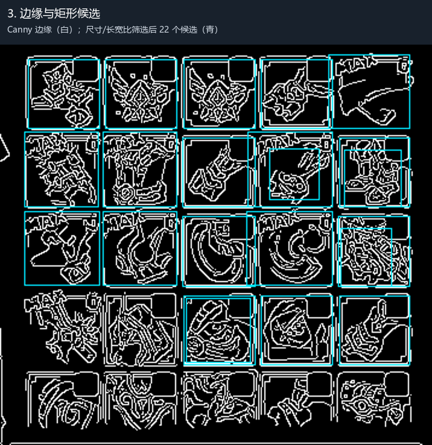
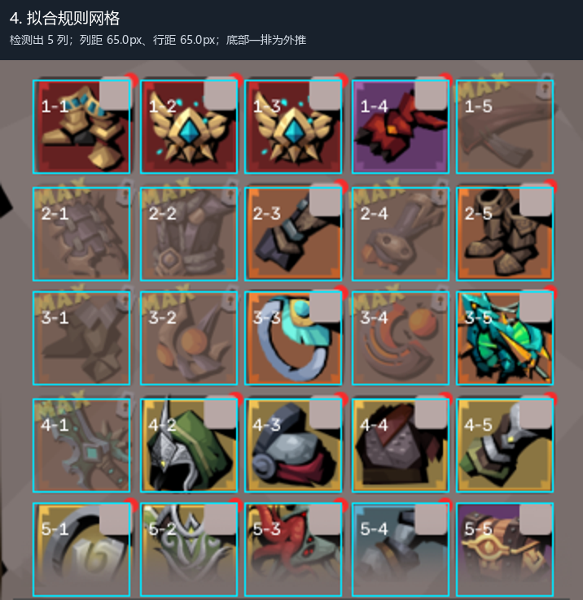
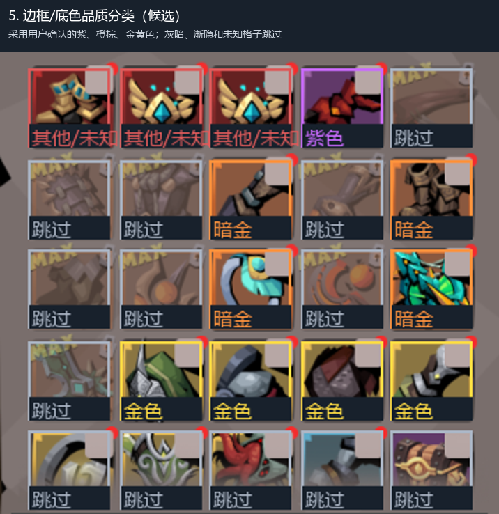
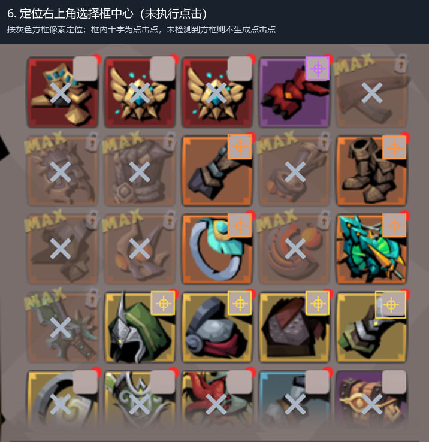

只处理用户截图，不点击游戏。搜索区域人工划定，网格自动拟合。品质结果是候选，不代表可出售。
原图 1004×565；ROI=(545,141)–(903,473)；尚未实现面板自动定位

保留饱和色：S≥65、55≤V≤240；装备图案也会进入候选

Canny 边缘（白）；尺寸/长宽比筛选后 22 个候选（青）

检测出 5 列；列距 65.0px、行距 65.0px；底部一排为外推

采用用户确认的紫、橙棕、金黄色；灰暗、渐隐和未知格子跳过

按灰色方框像素定位；框内十字为点击点，未检测到方框则不生成点击点
